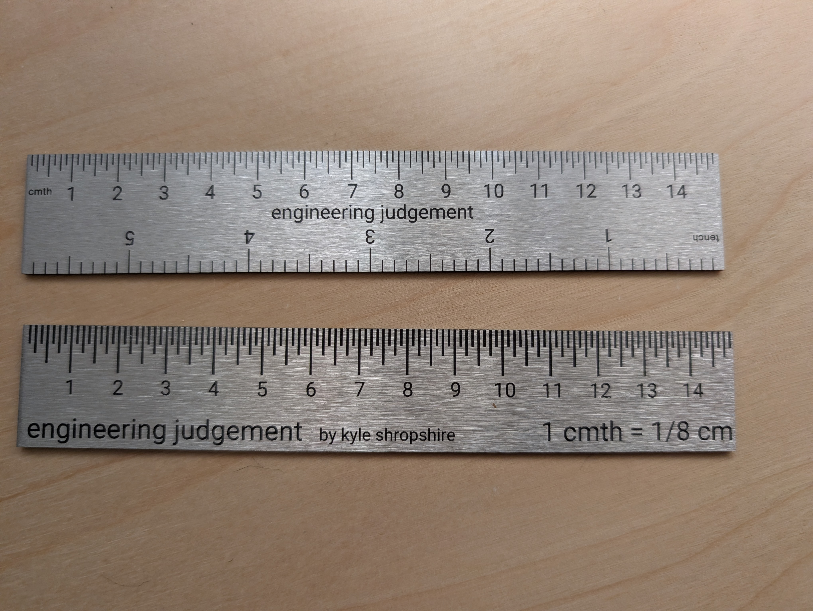

Home Project
cmth ruler
Uniting the Metric and Imperial communities on a global scale.
00Summary
A Surprise Success.
All the convenience of metric with the whimsy of imperial.
A funny thought about having fractional centimeters turned into cmthing great.
Over 355 cmth rulers have been sold as of 2026-09.
- Project
- cmth ruler
- Type
- Hardware
- Status
- Completed
- My Involvement
- All concept, design, and fabrication.
- Get One
- Etsy shop ↗
01Details
My fractional-metric ruler will unify the metric and imperial communities on a global scale.
A Fractional-Metric scale that is!
This is all the convenience of metric enhanced by the whimsy of imperial.
So 1 cmth = 1/8th cm (obviously) and before you ask yes, this can be extended to the mmth (1mmth = 1/8cmth also obviously)
Now with marks for 1 tench = 1/10 inch to satisfy the imperial community.
Recap: 1 centimeter is 8cmths or 64mmths.
Early reviews are positively raving: “I literally shook when I saw this.”, “Wild and I absolutely love it.”, “New global standard”, “I want this.”, “This is pathological bruh.”
These scales are made from 16gauge (pretty hefty) brushed 304 stainless steel with laser marked graduations. 120 cmths long of pure measurement goodness.
You've heard of going the extra mile, well, I went the extra cmth on these to make sure everyone's happy.
Besides being an essential inspection/quality department tool this cmth ruler can also be used as a desk conversation starter. Or you can give it to people who ask to borrow a ruler. Just imagine handing one of these beauties to your coworker when they ask to borrow your tools for the umpteenth time.
This is also a good physical representation of “Engineering Judgement”. That gut feeling engineers get after some experience and are able to tell how things are going to turn out even before looking into it too much.
02Prototypes

Get One
Want a cmth ruler of your own?
They're available in the EngineeringJudgement shop on Etsy. Questions about the build? Send me an email.